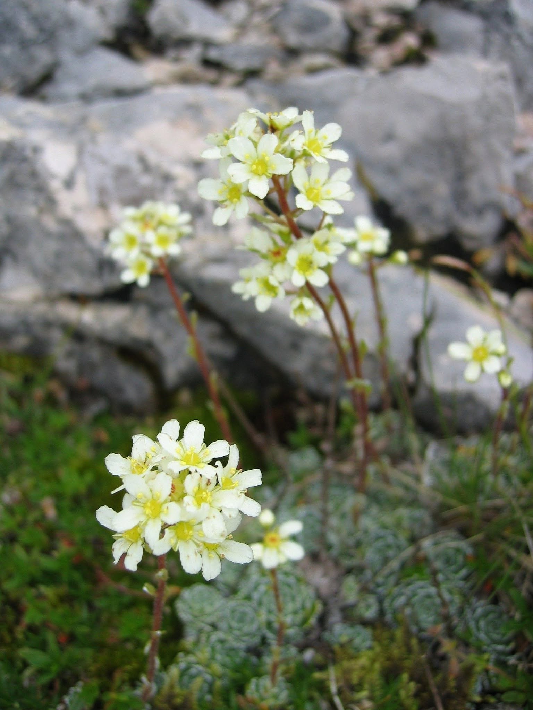

Saxifrage
Dans la fente étroite
où le roc se resserre,
Une patience verte
ourle le froid silence.
Nulle plainte —
seulement l’obstination claire
D’un souffle minuscule
en lente résistance.
Tu nais là où tout cède,
où la pierre s’entête,
Où même l’eau se lasse
à polir l’inflexible.
Et toi,
fragile éclat,
tu fissures la tête
Du monde immobile
d’un désir invisible.
Quelle force t’habite,
ô fleur de presque rien ?
Quel serment t’a liée
aux failles de la terre ?
Tu n’as ni voix ni cri,
mais ton geste est ancien :
Rompre sans violence,
insister sans colère.
Saxifrage —
ton nom craque
comme une promesse,
Une langue de sève
au cœur du minéral.
Et dans l’ombre des murs,
ta discrète ivresse
Rappelle aux orgueilleux
leur lenteur fatale.
Car parfois il suffit d’un souffle,
d’une attente,
D’un rêve enraciné
dans l’étroit et le dur,
Pour que le monde cède
à la vie insistante
Qui fait d’une fissure
un passage vers l’azur.
Djamel Metref
At Yenni le 30 Mars 2026

← Tous les poèmes